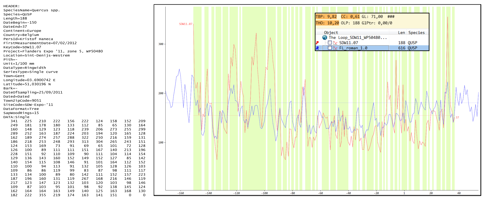

Het eigenlijke opmeten van de groeiringpatronen op de aangeleverde stukken hout gebeurt met behulp van een stereomicroscoop en een meettafel (fig. 8.1). Eerst worden de te onderzoeken stukken hout – afhankelijk van de toestand (nat/droog) – op het opmeten voorbereid. Bij nat archeologisch hout wordt op het kopse vlak een ‘leesspoor’ aangebracht, van minstens 0,5 cm breed, door met scheermesjes of een scalpel het hout bij te snijden. Droog hout kan ofwel worden bijgesneden met een scalpel of een breekmes, maar ook schuren is hier een optie. In het laatste geval wordt het stuk hout of de boorkern meerdere keren opgeschuurd met schuurpapier met steeds fijnere korrel (P80 > P120 > P240 > P360 > P400 > P800), en wordt tussen twee beurten door steeds het stof weggeblazen. De voorbereiding zorgt ervoor dat de groeiringgrenzen duidelijk van elkaar te onderscheiden zijn. Daarna wordt op het stuk hout elke groeiringbreedte langs het leesspoor opgemeten met een nauwkeurigheid van 0,01 mm. Dit gebeurt onder een stereomicroscoop met een vergroting van x10 tot x100. Indien gewerkt wordt met macro-foto’s, worden deze eerst gekalibreerd waarna de breedte van de groeiringen op scherm wordt opgemeten.
Het opmeten resulteert in een bestand waarin de meting van elke groeiringbreedte staat geregistreerd (fig. 8.2). Dergelijke bestanden worden in gespecialiseerde software eenvoudig omgezet naar een grafiek (fig. 8.2) of staafdiagram. Deze bestanden vormen de basis van verdere analyses.

Bij het vergelijken van het opgemeten groeiringpatroon met referentiekalenders of andere jaarringreeksen, worden op elke mogelijke positie telkens statistische parameters berekend die een maat van overeenkomst tussen beide reeksen trachten weer te geven. Bij dendrochronologisch onderzoek wordt voor het inschatten van de overeenkomst vooral gebruik gemaakt van zogenaamde t-waarden en het percentage aan parallelle variatie (%PV = GLK = Gleigläufigkeit). T-waarden moeten in theorie uitstijgen boven 3,5 om een betekenisvolle overeenkomst aan te duiden. In de praktijk blijkt dit echter een te lage waarde en worden waarden pas vanaf 5 als betrouwbaar aanzien. De %PV varieert theoretisch tussen 0 en 100. Bij een %PV van 50 is er totaal geen overeenkomst tussen de twee vergeleken jaarringpatronen, bij lagere waarden is er eerder een tegenovergesteld patroon waar te nemen. In de praktijk wijzen waarden boven de 65% op een betrouwbare datering. Minder geschikt voor dendrochronologisch onderzoek, maar soms ook gerapporteerd is de correlatiecoëfficiënt. Ook deze dient zo hoog mogelijk en statistisch significant te zijn om een goede overeenkomst te bekrachtigen. Belangrijk bij het interpreteren van dergelijke statistische correlatiecoëfficiënten is de overlap tussen de opgemeten groeiringreeks en de referentiekalender. De overlap is het aantal jaren dat beide reeksen gezamenlijk overspannen, wat maximaal even lang is als de kortste jaarringreeks.